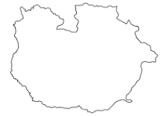

JORNADA MENSUAL
Dosis Aplicadas este mes
150
dosis administradas
CONTROL DE STOCK
Vacunas totales disponibles
COMUNIDES/PARROQUIAS VISITADAS
Cobertura Poblacional Guárico

San Juan de los Morros (Capital de Guárico)
Mnpio. Juan Germán Roscio • Hosp. Dr. Israel Ranuárez Balza • 94% Cobertura
Mnpio. Juan Germán Roscio • Hosp. Dr. Israel Ranuárez Balza • 94% Cobertura
Parroquias del Municipio Juan Germán Roscio
Distrito Sanitario Nº 1
Capital
San Juan de los Morros
96% Cobertura
580 dosis aplicadas
9 centros activos
Hosp. Ranuárez Balza & CDI
Parroquia
Cantagrualo
91% Cobertura
160 dosis aplicadas
3 ambulatorios rurales
Brigada Móvil Operativa
Parroquia
San Pedro del Paso
88% Cobertura
110 dosis aplicadas
2 puestos de salud
Supervisión en Norma
Juan Germán Roscio
(San Juan de los Morros)
Óptimo // 94%
Francisco de Miranda
(Calabozo)
En Seguimiento // 68%
Leonardo Infante
(Valle de la Pascua)
Óptimo // 86%
Pedro Zaraza
(Zaraza)
Refuerzo Requerido // 48%
José Félix Ribas
(Tucupido)
Estable // 74%
| ESTADO | HORA REGISTRO | ID FICHA | PACIENTE / IDENTIFICACIÓN | GRUPO ETARIO | BIOLÓGICO Y DOSIS | LOTE | CENTRO DE SALUD | ENFERMERO(A) RESPONSABLE | ACCIONES |
|---|---|---|---|---|---|---|---|---|---|
| ● Verificado | 18:23:45 | #VAC-GUA-98421 |
Carlos A. Rondón Mendoza
V-28.452.190
|
22 años (Adulto) |
Fiebre Amarilla
Dosis Única (0.5ml)
|
FA-2026-X8 | Hospital Dr. Israel Ranuárez Balza | Lic. Marlene Requena | |
| ● Verificado | 18:21:10 | #VAC-GUA-98420 |
Sofía Valentina Meza C.
V-34.908.112 (Menor)
|
4 meses (Lactante) |
Pentavalente Acelular
2da Dosis Refuerzo
|
PV-2025-09 | Ambulatorio Tipo II Calabozo | Enf. Jonathan Silva | |
| ● Verificado | 18:17:34 | #VAC-GUA-98419 |
Guillermo D. Castillo
V-14.882.301
|
68 años (Tercera Edad) |
Influenza Estacional
Dosis Anual Adulto
|
INF-2026-G1 | CDI Simón Bolívar (V. de la Pascua) | Lic. Yaritza Pantoja | |
| ● Verificado | 18:14:52 | #VAC-GUA-98418 |
Mariángel J. Gómez Altuve
V-31.205.674
|
19 años (Joven) |
Toxoide Tetánico Diftérico
1er Refuerzo
|
TT-2025-88 | Puesto de Salud Tucupido | Enf. Carlos Guache | |
| ● En Sincronización | 18:10:05 | #VAC-GUA-98417 |
José Arnaldo Ledezma
V-24.119.504
|
34 años (Adulto) |
Hepatitis B Adulto
3ra Dosis (Fin Esquema)
|
HB-2026-118 | Brigada Fluvial San José de Unare | Lic. Ramón Arveláez |